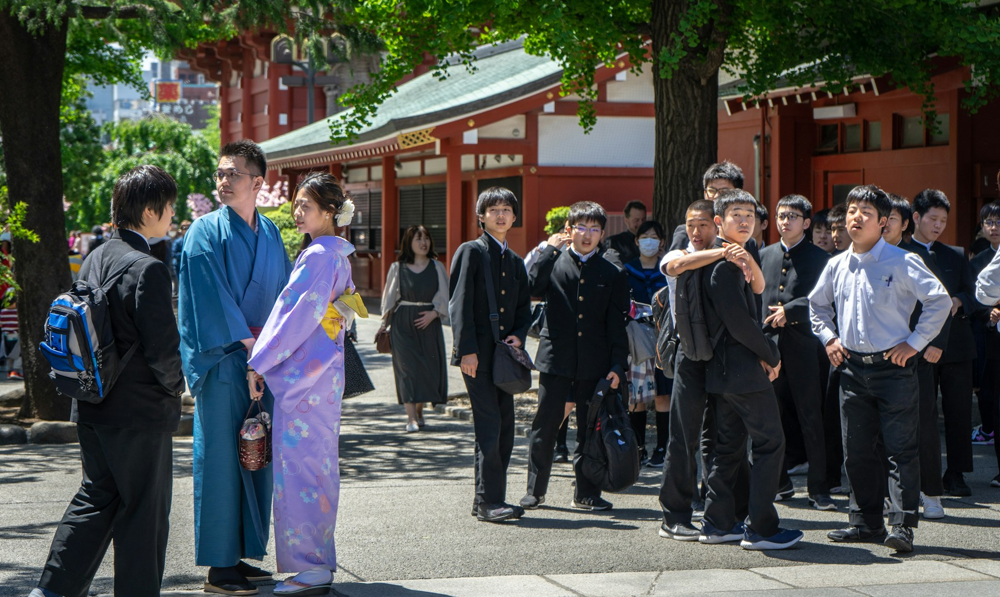

AOBA HIGH SCHOOL / SCHOOL GUIDE 2027
私立 青葉高等学校
好きが、未来をひらく。興味から問いをつくり、仲間と試し、社会へつなげる3年間。

3つのコース
探究コース
地域や企業とつながる課題研究を軸に、問いを深める力を育てます。
総合コース
基礎学力と選択科目を組み合わせ、一人ひとりの進路に合わせて学びます。
国際コース
英語運用と多文化理解を重視し、国内外の進学や交流に備えます。
学校概要
| 創立 | 1968年 |
|---|---|
| 学級編成 | 各学年6クラス |
| 所在地 | 青葉市みどり野2-18（架空） |
| 最寄り | 青葉みどり駅から徒歩8分（架空） |
2027年度 入試予定
| 推薦入試 | 2027年1月22日（金） |
|---|---|
| 一般入試 | 2027年2月10日（水） |
| 募集人数 | 普通科 男女216名 |
| 受験料 | 22,000円 |
この学校案内はUI検証用の架空資料です。学校名、日程、住所、費用、実績などは実在の学校情報ではありません。